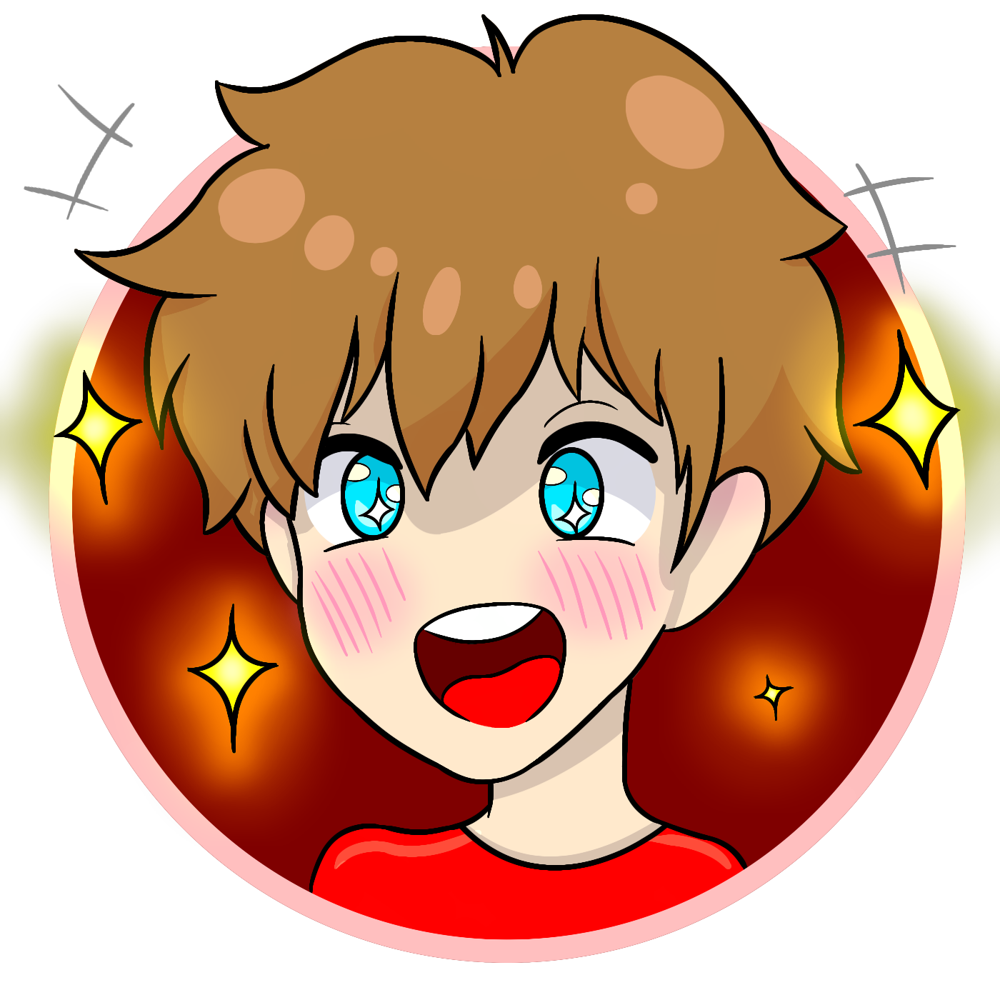

Elliot Evans
The Scientist / Inventor - 42 Years
ENTJ-A - Commander
Samuel Broteez
The Doctor - 20 Years
INFJ-T - Advocate
Jay Star

The Magic Source - 24 Years
INFP - Mediator
Rene Tickle
The Programmer - 19 Years
Still figuring it out
Jacob Jackson
The Cheerful One - 22 Years
ESFP-A - Entertainer
Adam Zondervan
The Guitarist - 23 Years
ISFP-A - Adventurer
Table of Contents
The Particle
How was it created?
In the lab the Elliot owned, he ran a bunch of tests on Jay to try and figure out how to make magic possible. It took eight years, but eventually, he and the scientists came up with the particle and released it into the air.
What is it?
The Particle is just that: a particle. It's in the air, you can't escape it. It's like how viruses can be airborne.
What does it do?
Once someone breathes in the particle, it affects them based on how it reacts with their DNA. Some people gain the ability to control a power, others gain weird mutations like cat ears or a third hand. But some people get fatal mutations, slowly killing them.
People aren't the only ones taking in air and we're not the only ones with DNA. Animals, and even plants meet both of those requirements. This means animals and plants are screwed up as well. There can be flying wolves. A tree can attack someone. Nothing is off the table anymore.
Can some people not be affected?
Just like with viruses, some people are naturally immune. And just like with viruses, there's also a period of exposure before symptoms start appearing. The time it takes for the particle to effect each person is also dependent on how it reacts with their DNA.
Can someone have powers and a mutation?
Powers ARE a mutation, and the particle only creates one mutation. It's either ONE power or ONE mutation. You can't have a fire-breathing wolf with wings, that's just absurd.
Can the effects be reversed?
Currently, no. Elliot actually has a very painful and very slow fatal mutation, so he has his scientists desperately looking for a cure.
Power Dampeners:
The lab deals with a lot of magical individuals. Since they constantly need new test subjects in the pursuit for a cure, they have to keep kidnapping people. In order to make that easier, they have created a power dampener that can be shot at someone and cause their mutation or powers to be rendered ineffective for 6 hours. The public does not know about these power dampeners.
The effects of using these dampeners on a regular basis has yet to be recorded.
More Info
How do people discover their powers?
Most people discover their powers through an emotional outburst. Emotions have a strong tie to the ability to wield magic. In a moment of very intense feelings, any feelings, regardless of if they're good or bad, it can trigger their powers to activate. That's because powers are at their highest power when the user is the most emotional. With practice, that can be changed.
As for mutations, some mutations appear overnight, while others develop over time.
Powers with specific rules that may seem unexpected
Animal characteristics: Really, that's the shapeshifting power, the user is able to shift into one other particular form, and their human form maintains some characteristic of that animal, like ears, a tail, or wings. The physical features will show up first. They can also get stuck in animal form if they accidentally transform and don't have enough control yet to be able to transform back.
Healing: There are two types of healing: transference and mending. Most people are likely to get mending if they have the ability to heal, and this means their powers work as how you would expect healing powers to work. You heal someone or something, that's it. There is a rarer form too, transference. This is the type of healing Jay can use, and since the particle is a weaker and more constricted version of his powers, a select few gain that same system as him. Instead of simply healing someone, the wound is transferred over to the user. Therefore, the user can't bring someone back to life, or else they would be transferring death to themselves.
Are some people more powerful than others?
In a sense, yes and no. It depends on how the user views their own powers. For instance, someone who can control water also has ice powers. If you think about it on the microscopic level, controlling water means controlling all the molecules within a body of water. If you make the molecules move slower, that makes it colder and can turn it into ice, and vice versa. Being able to have that precise control however would take a lot of practicing. In a way, that means water manipulation is more powerful than ice powers since water manipulation can be used to imitate ice powers. Same thing with heat powers: If you heat up one area in the air and cool down (remove heat) from another area, you can create wind due to the laws of thermodynamics in physics.
It depends largely on how much control a user has over their powers. The more control a user has, and the more creative a user is, the more than can figure out how to mold their specific power into more than it seems. Most of the time, the power transformation tricks apply to being able to use the basic elemental powers like wind, fire, water, and stuff like that. Elemental powers can be affected by normal physics the most, so users can simply use physics to their advantage.
What can be concluded based on similar mutations/powers?
The particle creates a mutation based on ones DNA. Family members will have very similar if not the same powers and mutations as each other since their DNA is so similar. Children are more likely to present with changes since they are growing and their body is going through natural changes to begin with. So often the child will mutate first and the parents will follow suit after.
How are plants affected?
Plants have DNA and do take in air to survive. Therefore, they are affected by the particle and can also gain mutations and powers. Since their cells are not compatible with conscious thought processes, they can not purposely activate any powers. If someone or something damages them, for instance, if someone stepped on a tree root, as a reflex, if the tree gained the ability to have some mobility, it can swing a branch towards the offender. It's not a conscious decision, just a reaction.
How has society changed?
Magic has not been around long enough for significant changes to be made. For instance, there is no "How to use powers 101" class in schools or anything, no new laws made. It hasn't been long enough for society to figure out how to go about it.
Most SOCIAL changes have occurred due to lack of knowledge. Just like in the real world, with things like LGBTQ+, not all but a lot of the people who are against it don't understand it. It's foreign and alien to them, so they discriminate against it. It's the same with this magic system. People don't understand it, so sometimes if a child mutates before a parent, they might be disowned because the parents don't know how to react or possibly accept that. This is also why the kidnaps are called "disappearances," because nobody knows if it's kidnap, if it's by choice, if they got sucked into another dimension or something, nobody knows except for a select few.
Religion
Wings
There is one characteristic a person can get without needing the particle. If they die and come back, they might come back and a few years later gain angel wings. Since people also have mutations, a lot of people write that off as a mutation and not any proof towards a specific religion. However, it is not a mutation.